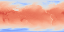
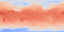
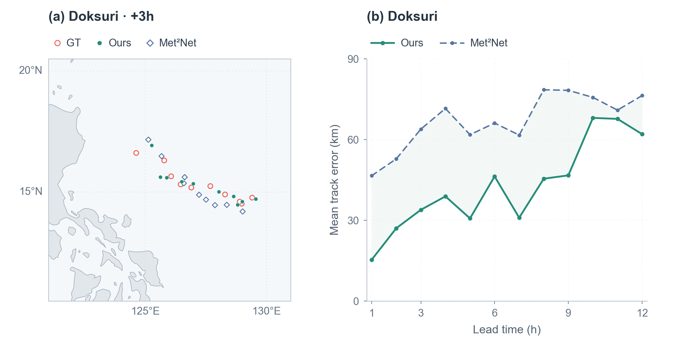

Find a local match.
The current input is matched against learned prototypes. In this example, P27 and P31 provide the explicit pattern references.
P27 0.88P31 0.12
arXiv
ProtoCast
*Corresponding author


2-m temperature · +12h · original 32 × 64 grid
01 / 03
Compare the same weather field, then look at the errors that separate two predictions.
Explore this exampleGlobalForecast
18.30%0.9608 → 0.7850, compared with Met²Net.
TyphoonTracking
25.95%0.7467 → 0.5529, compared with TAU.
Group-specific prototype banks help adapt local features while accounting for cross-variable dependencies.
See one contribution02 · Why prototypes?
Follow the paper’s T2M example from a matched pattern to a measurable contribution.
The current input is matched against learned prototypes. In this example, P27 and P31 provide the explicit pattern references.
03 · Global forecasts
Compare ground truth and a prediction in place. Drag the divider to inspect the same grid cells.
+12h · original 32 × 64 grid
Identical color scales are retained across methods and cases. UV10 shows wind speed; its error averages absolute U10 and V10 component errors. These selected examples are distinct from the aggregate benchmark results.
04 · Typhoon tracking
Replay the original Doksuri and Mawar forecast centers. Each map point is a +3h forecast from a separate six-hourly initialization.
Swipe the figure to inspect the map and error curve ↔

05 · How it works
Historical features, temporal changes, and forecast context guide sparse prototype matching. Weighted low-rank operators produce explicit local contributions before gated cross-variable fusion.
06 · Results
Inspect the exact four example-specific curves shown in the main paper. Each variable uses its own displayed test case.
Aggregate benchmarks
ProtoCast achieves the lowest MAE on all four GlobalForecast variables.
The compact table displays MAE only. The full paper reports MSE, MAE, RMSE, and R² for all compared methods.
Citation
@article{li2026protocast,
title={Interpretable Prototype-Conditioned Adaptation for Weather Forecasting},
author={Li, Zhixuan and Jiang, Hao and Hui, Chen and Geng, Kai and Lin, Weisi},
journal={arXiv preprint arXiv:2611.25848},
year={2026}
}